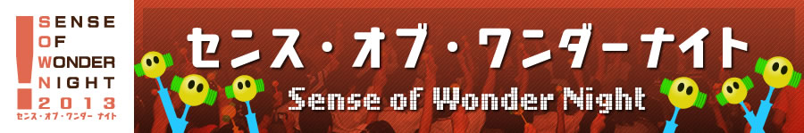

ビジネスデイ：2013.9.19［Thu］20［Fri］ 一般公開：2013.9.21［Sat］22［Sun］ 会場：幕張メッセ
センス・オブ・ワンダーナイト

-
- 主催 一般社団法人コンピュータエンターテインメント協会 日経ＢＰ社
- 協力 国際ゲーム開発者協会日本（IGDA日本）
What’s New
センス・オブ・ワンダーナイトとは
- 「センス・オブ・ワンダー ナイト 2013（SOWN 2013）」は、
ゲーム開発者にスポットライトを当て、“見た瞬間、コンセプトを
聞いた瞬間に、誰もがはっと、自分の世界が何か変わるような感覚”
＝「センス・オブ・ワンダー」を引き起こすようなゲームのアイデアを発掘し、
東京ゲームショウにてプレゼンテーションの機会を提供する企画で、
今年で6回目の開催となります。 - 2012年度は75作品の応募があり、選考の結果、海外6作品を含む10作品の
プレゼンテーションが行われました。当日は、300名を超える観覧者が来場しました。プレゼンテーション会場では、さまざまな国から選ばれたプレゼンターによりユニークなゲームアイデアが紹介され、盛況のうちに終了しました。
センス・オブ・ワンダーナイト の目的
- 実験的であり、創造的であり、伝統的と呼ばれないゲームデザインや
アイデアを含んだゲームを紹介すること - 「センス・オブ・ワンダー」を感じられるゲームが作られることの重要性を紹介し、
それにより、ゲーム産業の活性化を図ること - 実験的なゲームを開発している人たちに、将来へのチャンスの場を提供すること
- ゲームデザインに新しい領域を作り出していくこと
発表を期待されているのは、プロトタイプのデモや、実験的な要素を持った発売済もしくは発売予定のゲーム、
変なことを思いついた学生が開発したゲームと いったものです。
プロやアマチュアといった区別もまったくありません。
小さなベンチャー企業のゲームや、一人で開発しているような同人ゲームの投稿も歓迎します。
もし、「センス・オブ・ワンダー」を引き起こせるようなゲームを発表したいと思われるなら、
エントリー方法をご確認のうえ、あなたの作品を応募してください。
謝辞
「センス・オブ・ワンダー ナイト」は、Game Developers Conferenceで、2001年に始まった「Experimental Gameplay Workshop」から、多くのインスピレーションを受けています。このワークショップを成功させてきた多くの関係者ならびに友人達に、感謝の意を表します。